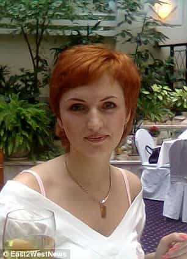

< < < Back
Mainstream Media Rushes To Excuse Muslim Woman Who Decapitated Russian Child – Return Of Kings
There is no such thing as female responsibility. Repeat, there is no such thing as female responsibility. It does not even matter if the victims are children.
This is the message that the mainstream media wants you to recite and believe after the horrendous decapitation of a disabled four-year-old Russian girl by her Uzbek nanny in Moscow. The main “reason” for her unspeakable crime, which Gyulchekhra Bobokulova, 38, has admitted guilt over, has changed. At first, it seems she severed the child’s head because, in her absence from Uzbekistan, her husband had started a new family. After that, her central justification for murdering cognitively impaired Anastasia shifted to revenge over Vladimir Putin’s ordering of air strikes against ISIS and other rebels in Syria.
In a macabre display, Bobokulova began parading the child’s head around the entrance of a suburban Moscow subway station. Onlookers, fearing a potential bomb, kept their distance as the authorities approached. These first responders handled the situation professionally and commendably, taking the depraved woman into custody. The same praise cannot be given to those reporting on the saddening events.
The implications being drawn by almost every major news outlet, from the BBC to CNN, is that Gyulchekhra Bobokulova is mentally ill. Such an assumption was especially widespread when the “my husband cheated on me” thesis was coming out. Journalists are entirely unwilling to let the facts we know so far speak for themselves and feel compelled to inject commentary about Bobokulova’s personal life.
As the nanny continues to falsely blame Russian military actions for her choice, what we are witnessing is an institutional need for news-shapers to perpetuate the myth that women just cannot commit repulsive crimes with anything close to full agency. Did the woman’s partner hit her… in 2002? Did she lose her job [probably because she was incompetent!]? Did she claim she was sexually assaulted two decades ago [with no proof]? Everything will be done to search for answers, aside from pure malice, as to why a woman could ever do this to an innocent, not to mention extremely vulnerable person.
The five most infamous American shootings of the past five years have all involved mental health issues
With brain damage from being underweight, possibly due to anorexia, Adam Lanza’s cerebral cortex and other areas of the brain responsible for decision-making were massively eroded, probably permanently. Can the same be said of Bobokulova?
Now juxtapose this largely sympathetic response regarding Bobokulova to the bellows of angry SJWs about white American men who commit killings. Salon has been one of the worst repeat offenders in this area. And one diatribe last year deserves particular scorn. In the aftermath of very disturbed Dylann Roof’s church shooting spree in Charleston, perennial moron Arthur Chu, known for his slandering of Gamergate campaigners, claimed mental illness was a “cop-out” in explaining “white” rampages like those in Aurora, Isla Vista, Tucson, Charleston, and Sandy Hook. Strangely, he counts biracial Elliot Rodger, the Isla Vista killer, as Caucasian, all while claiming in other situations that milky-skinned SJW Shaun King is actually black.
So where can I start with that level of stupidity? For one, Chu’s article deliberately avoided any explicit mentioning of Adam Lanza, the Sandy Hook perpetrator. This is because a report less than a year before had indicated he likely suffered from irreversible brain damage. Lanza was so extraordinarily emaciated and malnourished that he weighed just 112 pounds at around six feet tall. It is surprising he could even carry the guns with which he shot people. This adds to the other inconvenient facts for SJWs about him, including his complete inability to touch door knobs with his hands or fingers and his tantrum-level refusals to have a Christmas tree in the home.
Had Adam Lanza been captured, it is inconceivable that he could ever have fairly been found guilty of killing the students and teachers at Sandy Hook. His cognitive impairment via the brain damage and his long history of issues that any sane person would evaluate as serious mental illness would count decisively against him having any proper legal capacity. Him killing himself was the best possible outcome for SJWs. Even if they do not believe in innocence before guilt at the best of times, the death of a shooter means open season for them to twist the situation to their own advantage, notably if the killer is white or can be linked, however tenuously, to conservatives or red pill ideas.
Aurora shooter James Holmes attempted suicide… from age 11.
These kinds of jaw-dropping omissions or grossly underemphasized realities about SJWs’ favorite shootings flow into the Aurora cinema deaths from several years ago. Student James Holmes had a history of mental illness going back over a decade, including suicide attempts that began at the age of 11. He was also known to stare at walls in the presence of co-workers, grinning or talking to himself.
Well-documented or very credible reports of this nature are replete in all five of the most covered shootings of the past five or so years. Besides Lanza and Holmes, Elliot Rodger, Dylann Roof and Jared Lee Lougner (Tucson) either had significant psychological and psychiatric interventions or were involved in pre-shooting events that warranted them, such as Dylann Roof’s behavior towards mall patrons and staff. What Roof did became so worrying for these people that he was banned from that center.
The non-white Muslim factor

In the West Gyulchekhra Bobokulova would likely be found not guilty by way of genitalia.
The rush to judgment over white and male American shooters is absent in Bobokulova’s case not only due to her having the right genitals but also because she is racially Central Asian and, to boot, a Muslim. With veritable hordes of angry, sex-seeking and violent young Middle Eastern men flowing into the European heartland, a proper assessment of this murderous nanny necessitates the idea that there may be cultural factors that explain why poor Anastasia was butchered. That is clearly anathema to the agenda of those who want to both keep the present fake refugees in Europe and invite millions more to come.
Similar to a stupid Cosmopolitan flow chart quiz, like “Should you dump your boyfriend?”, journalists and the elites whose interests they serve tend to ask the following kinds of questions to determine whether to be objective or overwhelmingly partisan:
- Is the perpetrator of a nominal crime male? (5 points)
- Are they white? (10 points for a white male, 2 points for a white female)
- Are they non-leftist? (5 points for politically ambivalent, 15 points if they can be linked to conservatives or another maligned group even with the longest of bows)
- Are they from another protected group? (10 points for a non-Muslim, 10 points for a heterosexual male)
If your score is about zero after a crime it seems you definitely committed, the story will be balanced (the more likely outcome if you express support for ISIS) or amazingly sympathetic, provided you do not delve into supporting people like terrorists being bombed. The higher your point count is, the less entitled you are to anything resembling sober consideration or the right to a fair trail.
Let’s remember a little girl has died here

Anastasia’s mother Ekaterina and her husband, plus their other child, have lost a cherished family member, but the media is too busy trying to will that Bobokulova had a mental health excuse for taking her from them.
All outlets giving Bobokulova thinly-veiled excuses or mitigations for her crime are doing is spitting in the face of a little girl who, through her heartbreaking disabilities, was already truly vulnerable. It is par for the course nowadays that supposedly extremist Return of Kings is the one championing the obligation to hold an evil nanny responsible for what she has done to a defenseless person. SJWs and feminist-minded journalists preaching female empowerment are the same cretins who want to discount the capacity of a murderer at the expense of a child who had the privilege of feeling her head being cut from its body.
We are living in mind-boggling times. To prop up the “rights” of illegitimate migrants in Europe, and continue the well-spun fantasy that women are not ever responsible when they commit the most deplorable acts, an actual victim, both before and after her death, is being sacrificed on the altar of political correctness.
Rest in peace, little Anastasia.Yet you will not get such peace from those actively helping your murderer.
Read More: Death Toll Climbs In Paris As Media Rushes To Downplay Connection To Muslim Terrorism